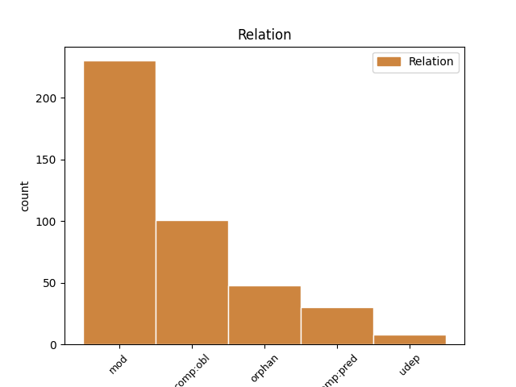
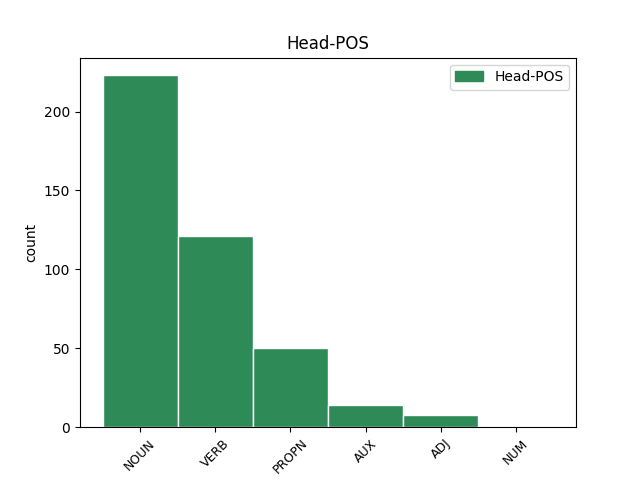
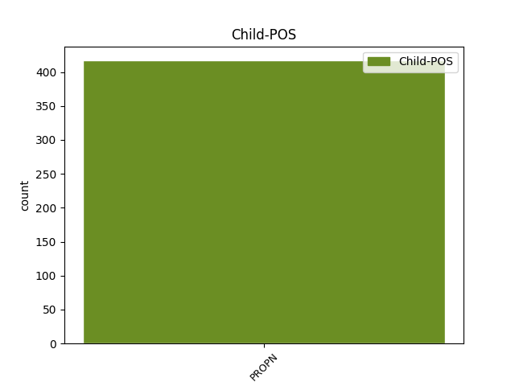

Distribution of features within this leaf



Agreement Rules sorted by frequency.
- When the dependent token is the modifer(mod) of the head token, and the dependent token is PROPN.
1 въсточнаго _ _ _ _ 0 _ _ _
2 противъ _ _ _ _ 0 _ _ _
3 постави _ _ _ _ 0 _ _ _
4 пигїи _ _ _ _ 0 _ _ _
5 и _ _ _ _ 0 _ _ _
6 златаго _ _ _ _ 0 _ _ _
7 мѣста _ _ _ _ 0 _ _ _
8 а _ _ _ _ 0 _ _ _
9 западномꙋ _ _ _ _ 0 _ _ _
10 противꙋ _ _ _ _ 0 _ _ _
11 вратъ врата NOUN Nb Case=Gen|Gender=Neut|Number=Plur 0 _ _ _
12 с҃тго _ _ _ _ 0 _ _ _
13 романа романъ PROPN Ne Case=Gen|Gender=Masc|Number=Sing 11 mod _ ref=307v17
14 и _ _ _ _ 0 _ _ _
15 раздроушенаго _ _ _ _ 0 _ _ _
16 мѣста _ _ _ _ 0 _ _ _
1 въ _ _ _ _ 0 _ _ _
2 лѣт҃ _ _ _ _ 0 _ _ _
3 ҂ѕ҃ _ _ _ _ 0 _ _ _
4 ѱ҃ _ _ _ _ 0 _ _ _
5 к҃ _ _ _ _ 0 _ _ _
6 ходи _ _ _ _ 0 _ _ _
7 мьстислав _ _ _ _ 0 _ _ _
8 на _ _ _ _ 0 _ _ _
9 чюдь _ _ _ _ 0 _ _ _
10 рекомѹю рещи VERB V- Case=Acc|Gender=Fem|Number=Sing|Strength=Weak|Tense=Pres|VerbForm=Part|Voice=Pass 0 _ _ _
11 търмѹ търма PROPN Ne Case=Acc|Gender=Fem|Number=Sing 10 comp:pred _ ref=true
12 съ _ _ _ _ 0 _ _ _
13 новгородьци _ _ _ _ 0 _ _ _
1 В _ _ _ _ 0 _ _ _
2 то _ _ _ _ 0 _ _ _
3 же _ _ _ _ 0 _ _ _
4 лѣт _ _ _ _ 0 _ _ _
5 посла _ _ _ _ 0 _ _ _
6 кнѧзь _ _ _ _ 0 _ _ _
7 мстиславъ _ _ _ _ 0 _ _ _
8 братю _ _ _ _ 0 _ _ _
9 свою _ _ _ _ 0 _ _ _
10 на _ _ _ _ 0 _ _ _
11 кривичѣ _ _ _ _ 0 _ _ _
12 четырми _ _ _ _ 0 _ _ _
13 пути _ _ _ _ 0 _ _ _
14 вѧчеслава _ _ _ _ 0 _ _ _
15 ис _ _ _ _ 0 _ _ _
16 турова _ _ _ _ 0 _ _ _
17 андрѣꙗ _ _ _ _ 0 _ _ _
18 из _ _ _ _ 0 _ _ _
19 володимерѧ _ _ _ _ 0 _ _ _
20 а _ _ _ _ 0 _ _ _
21 всеволодка вьсеволодъко PROPN Ne Case=Gen|Gender=Masc|Number=Sing 0 _ _ _
22 из _ _ _ _ 0 _ _ _
23 городна _ _ _ _ 0 _ _ _
24 и _ _ _ _ 0 _ _ _
25 вѧчеслава вячеславъ PROPN Ne Case=Gen|Gender=Masc|Number=Sing 21 orphan _ ref=true
26 ꙗрославича _ _ _ _ 0 _ _ _
27 исъ _ _ _ _ 0 _ _ _
28 кльчьска _ _ _ _ 0 _ _ _
1 мьстиславу _ _ _ _ 0 _ _ _
2 же _ _ _ _ 0 _ _ _
3 прибѣгшю прибѣгнути VERB V- Case=Dat|Gender=Masc|Number=Sing|Strength=Strong|Tense=Past|VerbForm=Part|Voice=Act 0 _ _ _
4 новугороду новъгородъ PROPN Ne Case=Dat|Gender=Masc|Number=Sing 3 comp:obl _ ref=true
5 рекоша _ _ _ _ 0 _ _ _
6 ѥму _ _ _ _ 0 _ _ _
7 новгородци _ _ _ _ 0 _ _ _
Disagree Examples:
1 и _ _ _ _ 0 _ _ _
2 кн҃ѧзь кънязь NOUN Nb Case=Nom|Gender=Masc|Number=Sing 0 _ _ _
3 великї _ _ _ _ 0 _ _ _
4 ѿпѹстилъ _ _ _ _ 0 _ _ _
5 мѧ _ _ _ _ 0 _ _ _
6 всеѧ _ _ _ _ 0 _ _ _
7 рѹси русь PROPN Ne Case=Gen|Gender=Fem|Number=Sing 2 mod _ ref=2
8 доброволно _ _ _ _ 0 _ _ _
1 и _ _ _ _ 0 _ _ _
2 билъ бити VERB V- Aspect=Res|Case=Nom|Gender=Masc|Number=Sing|Strength=Strong|VerbForm=Part|Voice=Act 0 _ _ _
3 есми _ _ _ _ 0 _ _ _
4 челѡм _ _ _ _ 0 _ _ _
5 василью василии PROPN Ne Case=Dat|Gender=Masc|Number=Sing 2 comp:obl _ ref=4
6 папинѹ _ _ _ _ 0 _ _ _
7 да _ _ _ _ 0 _ _ _
8 послѹ _ _ _ _ 0 _ _ _
9 ширвашинѹ _ _ _ _ 0 _ _ _
10 асан _ _ _ _ 0 _ _ _
11 бегѹ _ _ _ _ 0 _ _ _
12 что _ _ _ _ 0 _ _ _
13 есмѧ _ _ _ _ 0 _ _ _
14 с _ _ _ _ 0 _ _ _
15 нимъ _ _ _ _ 0 _ _ _
16 пришли _ _ _ _ 0 _ _ _
17 чтобы _ _ _ _ 0 _ _ _
18 сѧ _ _ _ _ 0 _ _ _
19 печаловалъ _ _ _ _ 0 _ _ _
20 ѡ _ _ _ _ 0 _ _ _
21 людех _ _ _ _ 0 _ _ _
22 что _ _ _ _ 0 _ _ _
23 их _ _ _ _ 0 _ _ _
24 поимали _ _ _ _ 0 _ _ _
25 под _ _ _ _ 0 _ _ _
26 тархы _ _ _ _ 0 _ _ _
27 каитаки _ _ _ _ 0 _ _ _
1 а _ _ _ _ 0 _ _ _
2 бѹтхана _ _ _ _ 0 _ _ _
3 же _ _ _ _ 0 _ _ _
4 велми _ _ _ _ 0 _ _ _
5 велика _ _ _ _ 0 _ _ _
6 есть _ _ _ _ 0 _ _ _
7 с _ _ _ _ 0 _ _ _
8 пол полъ NOUN Nb Case=Acc|Gender=Masc|Number=Sing 0 _ _ _
9 твѣри твѣрь PROPN Ne Case=Gen|Gender=Fem|Number=Sing 8 mod _ ref=12
10 камена _ _ _ _ 0 _ _ _
1 а _ _ _ _ 0 _ _ _
2 все _ _ _ _ 0 _ _ _
3 то _ _ _ _ 0 _ _ _
4 камение _ _ _ _ 0 _ _ _
5 да _ _ _ _ 0 _ _ _
6 ꙗхонты _ _ _ _ 0 _ _ _
7 да _ _ _ _ 0 _ _ _
8 ѡлъмазъ _ _ _ _ 0 _ _ _
9 покꙋпили _ _ _ _ 0 _ _ _
10 на _ _ _ _ 0 _ _ _
11 камени камы NOUN Nb Case=Loc|Gender=Masc|Number=Sing 0 _ _ _
12 ктѹчара ктучаръ PROPN Ne Case=Gen|Gender=Masc|Number=Sing 11 mod _ ref=22
1 посем _ _ _ _ 0 _ _ _
2 же _ _ _ _ 0 _ _ _
3 коцелъ _ _ _ _ 0 _ _ _
4 кнѧзь _ _ _ _ 0 _ _ _
5 постави _ _ _ _ 0 _ _ _
6 мефедья _ _ _ _ 0 _ _ _
7 еппса _ _ _ _ 0 _ _ _
8 въ _ _ _ _ 0 _ _ _
9 пании _ _ _ _ 0 _ _ _
10 на _ _ _ _ 0 _ _ _
11 столѣ столъ NOUN Nb Case=Loc|Gender=Masc|Number=Sing 0 _ _ _
12 ст҃го _ _ _ _ 0 _ _ _
13 ѡнъдроника андроникъ PROPN Ne Case=Gen|Gender=Masc|Number=Sing 11 mod _ ref=28.3
14 апсла _ _ _ _ 0 _ _ _
15 единого _ _ _ _ 0 _ _ _
16 ѿ _ _ _ _ 0 _ _ _
17 о҃ _ _ _ _ 0 _ _ _
18 оучн҃ка _ _ _ _ 0 _ _ _
19 ст҃го _ _ _ _ 0 _ _ _
20 аспла _ _ _ _ 0 _ _ _
21 павла _ _ _ _ 0 _ _ _